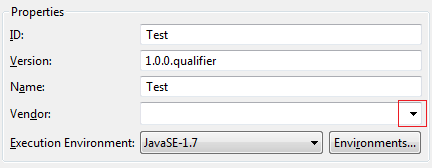
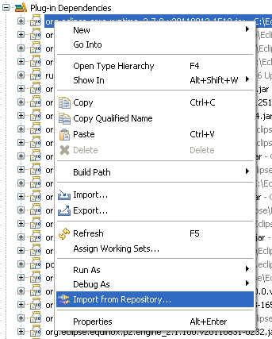
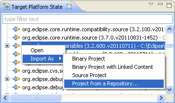
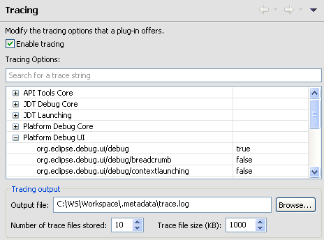
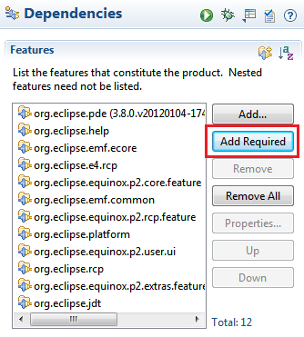
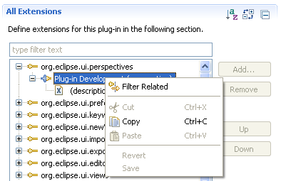
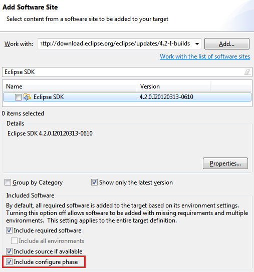
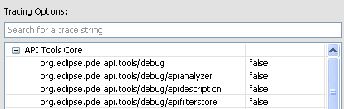
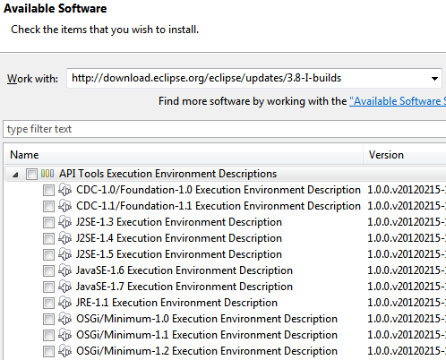

Here are descriptions of some of the more interesting or significant changes made to the Plug-in Development Environment (PDE) for the Juno (3.8 and 4.2) release of Eclipse, grouped into:
Views and editors |
|
| Plug-in vendor history |
When creating a new plug-in, fragment or feature the Vendor information used in the creation wizard is retained and can be reused
by selecting the drop-down in subsequent uses of the wizard.
 |
| Import from repository in the Package Explorer view |
By using File > Import... > Import Plug-ins and Fragments you can import the source
code for a plug-in from your installation if the plug-in has the necessary manifest header.
Now you can access this functionality directly from the Package Explorer and Project Explorer
views. Right click on a plug-in in your project's Plug-in Dependencies classpath container
and select Import from Repository....
 Importing from a repository is also available in the Target Platform State, Plug-in Dependencies and Plug-ins views. If the selected item can be imported, there will be an Import As menu visible when right clicking in the view.  |
| Tracing preference page |
A new preference page is available to dynamically set the debug tracing options for Eclipse. You can turn on individual tracing options and the changes will take effect immediately. There is no need to restart Eclipse.
 To add a plug-in's tracing options to the page, you must provide an The preference page can be included in other products. It is contained in the |
| Add required in feature based product |
The product editor now has an Add Required button when editing a feature based product. Pressing the button will add all the features that are required by the features already in the product configuration.
 |
| Extension editor enhancements |
Several improvements have been made to the extensions tab of the Plug-in Editor.

|
| Workspace deletion is cancelable | Eclipse and OSGi launch configurations have the option to delete the workspace and configuration folders before launching. This can be a long running operation with large workspaces. The operation is now cancelable which will stop the launch. |
Target Platform |
|
| Custom target locations |
You can now provide custom locations for target definitions. They appear in both the target
definition editor and wizard along with the platform provided target locations: directory, installation,
feature and software site.
To provide a custom location, you must implement ITargetLocation and extend the extension point org.eclipse.pde.core.targetLocations. To provide labels, wizards and other user interface elements, you must extend an additional extension point org.eclipse.pde.ui.targetLocationProvisioners and have your ITargetLocation implementation adapt to several types. For additional details, view the Javadoc on ITargetLocation. |
| Bundle classpath resolution API | The org.eclipse.pde.core.bundleClasspathResolvers extension point allows you to dynamically add additional content to the runtime classpath and source lookup path of workspace plug-ins at launch time. |
| Non *.jar plug-ins in target platform | The target platform will now recognize archive files with any file extension as long as they contain a manifest with the necessary OSGi headers. Previously, PDE only supported directory plug-ins and jarred (*.jar) plug-ins. |
| Target definition configure phase |
When working with a target definition containing a software site location (such as a p2 repository) it is now possible to change whether the p2 configuration phase should be run when resolving the target. By default the configuration phase is not included. Changing the setting will change all locations in the target definition.
 |
API Tools |
|
| API Tools tracing |
API Tools has added all debug tracing settings to the Tracing preference page where they can be enabled and disabled as needed without restarting.
 |
| EE descriptions updated |
The API Tools execution environment descriptions have been
updated with more accurate package information and have been renamed for easier installation.
To turn on warnings for invalid references to classes or methods that are not available in the configured execution environment, use the
Plug-in Development > API Errors/Warnings preference page.
The execution environment descriptions can be installed from the Eclipse update site (http://download.eclipse.org/eclipse/updates/3.8-I-builds) under the API Tools Execution Environment Descriptions category.  |